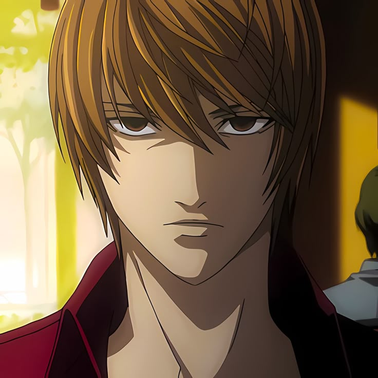
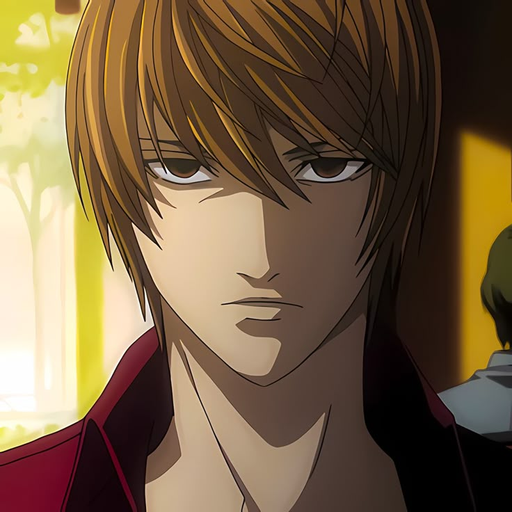

Ягами Лайт
Лайт Ягами (яп. 夜神月, Ягами Райто) — главный герой аниме и манги "Тетрадь смерти" (Death Note). Он лучший студент Японии, сын высокопоставленного полицейского Соитиро Ягами, обладающий гениальным умом и острым чувством справедливости
Фотографии
Все приложенные фото взяты из аниме Тетрадь смерти.
 

Подробная информация
До тетради смерти
Лучший ученик Японии, сын начальника полиции Соитиро Ягами. Идеалист, разочарованный в "прогнившем мире". Популярен, но скучает от отсутствия вызовов.
После нахождения
Находит Тетрадь смерти Рюка, убивает преступников по TV. Интеллектуальная дуэль с детективом L. Манипулирует ФБР, Миской, становится "вторым L".
Падение
Преемники L (Ниа, Мелло) крадут тетрадь. Отец погибает, планы рушатся. На складе Ниа доказывает вину — Рюк пишет имя Лайта, сердечный приступ 28 января 2010.